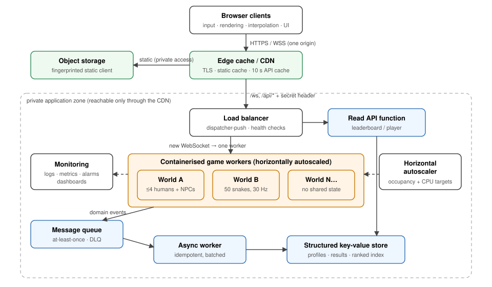
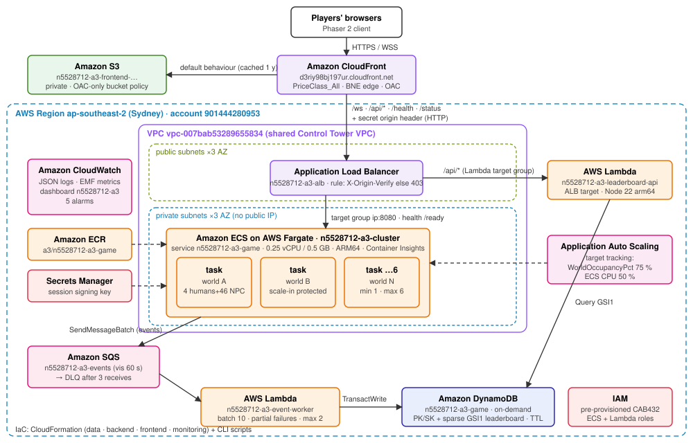

| Student | Yun Chi Yip |
| Student ID | n5528712 |
| QUT username | n5528712@qut.edu.au |
| Deployed application | https://d3riy98bj197ur.cloudfront.net/ |
| AWS region / account | ap-southeast-2 · 901444280953 |
| Date | 19 October 2026 |
Generative AI was used extensively in this assessment. Anthropic's Claude (through the Claude Code
agentic coding tool) worked under my direction and on my instructions: it inspected the starting repository,
designed the architecture, wrote the server, client, Lambda, infrastructure-as-code and test code,
ran the local, Docker and AWS deployments and tests, collected the evidence in the evidence/ folder,
and drafted this report from that evidence. I set the requirements, scope and constraints, provided the account
access and the starting code (a fork of Loonride's open-source Slither.io tutorial clone), reviewed the outputs,
and am responsible for the submitted work.
All measurements reported here come from the deployed system and test runs, not from the AI's assumptions. ⟦Replace or extend this statement with the exact wording QUT/CAB432 requires, and describe your own review and contribution accurately.⟧
Real-time multiplayer games are a demanding workload for cloud architecture. They need stateful compute that updates many entities dozens of times per second, low-latency bidirectional communication, durable records of outcomes, and capacity that follows a player population that changes through the day. This project uses a small Slither.io-style game as a vehicle to build and measure such a system on AWS.
The starting point was Loonride's open-source tutorial clone of Slither.io (Loonride, 2017). It is a single-browser Phaser CE 2.6.2 game in which a P2 physics engine running in the page decides movement, collisions, food consumption and growth for one player and two bots. Nothing in it is networked, and the browser is the authority on every outcome, so a multiplayer version could not trust it. The project keeps the original sprites, renderer, movement constants and rules, and moves all authority to a server-side simulation.
NPCs = 50 − humans).ROOM_FULL and is routed elsewhere.The engineering objectives were a cloud architecture that (i) scales horizontally with demand using
non-Lambda auto-scaling, (ii) distributes connections across stateful workers, (iii) keeps durable data outside
those workers, (iv) caches static content at the edge, (v) processes outcomes asynchronously and idempotently,
(vi) is observable and recovers from failures, and (vii) stays cost-proportionate. Every claim in this report is
backed by a captured artefact. Evidence identifiers such as [E11] refer to the register in
Appendix B and files in the repository's evidence/ folder.

| Concept | Responsibility in this system | Why it is needed |
|---|---|---|
| Edge cache / CDN | Terminates TLS near players. Caches fingerprinted static files for a year and the leaderboard response for 10 s. Proxies WebSocket upgrades and API calls to the private origin. | Static delivery scales independently of game servers. Repeat requests never reach the origin. A single origin for page, API and socket removes CORS and needs one certificate. |
| Object storage | Holds the built client (HTML, one JS bundle, Phaser, sprites), readable only by the CDN. | Durable, cheap, serverless hosting for immutable assets. |
| Load balancer | Accepts traffic only from the CDN, health-checks workers, and assigns each new WebSocket to a healthy worker (dispatcher-push). | Hides individual workers, removes failed ones from rotation, and spreads new sessions. |
| Containerised game workers | Each worker process owns exactly one authoritative world: lobby, 50 snake slots, food, 30 Hz tick, 15 Hz snapshots. | Real-time simulation needs long-lived in-memory state, held sockets and a steady CPU budget. Short-lived functions fit this poorly. |
| Horizontal autoscaler | Adds or removes workers from measured world occupancy and CPU. Workers hosting players opt out of scale-in. | Capacity follows demand without terminating games in progress. |
| Message queue + dead-letter queue | Durable buffer for domain events (PLAYER_DIED, SESSION_ENDED, WORLD_STARTED, WORLD_COMPLETED). | Decouples the latency-critical tick from database writes, absorbs bursts, retries failures and isolates poison messages. |
| Asynchronous worker (function) | Applies events in batches, idempotently. | Scales to zero. Retry semantics come from the queue. |
| Structured key-value store | Player profiles, death history, world records, idempotency markers, and a secondary index ordered by best score. | Durable state lives outside the stateful workers. Every access is a key lookup or an ordered range, never a scan. |
| Read API (function) | Serves the leaderboard and a player's statistics. | Keeps workers focused on simulation. Responses are cacheable at the edge. |
| Monitoring system | Structured logs, platform and custom metrics, dashboards, alarms. | Drives scaling decisions and makes failures diagnosable. |
The central decision is that the unit of scale is an independent world. A world is small (50 snakes, ≤4 humans), lives entirely in one worker's memory, and shares no real-time state with any other world. Scaling out means adding worlds, not partitioning one world across machines.
This removes distributed consistency from the hot path. Each 30 Hz tick is a single-threaded loop over local memory (measured at about 0.3 ms per tick for a full world, §4.5), with no cross-node locks, replicated physics or consensus protocol. It also makes capacity planning arithmetic: because NPCs are workload rather than users,
requiredWorlds = ceil(concurrentHumans / 4) runningWorkers ≈ ceil(concurrentHumans / (4 × targetOccupancy))
The trade-off is explicit. A world's transient state exists only inside its worker. If that worker fails or is replaced, the positions and current lengths in that world are lost, and its players reconnect to another world within seconds. That is acceptable for a casual arena game, where a round is short and losing it costs a player one life. Everything with long-term value (scores, deaths, best scores, world summaries) leaves the worker as an event at the moment it happens and is stored durably. Restoring exact world state would need checkpointing or replication at tick rate, a large cost in complexity, bandwidth and latency for little player benefit. A single global world was rejected for the same reason: it would need spatial partitioning with entity hand-over and cross-node collision detection.
ROOM_FULL and closes. The client retries after 150–600 ms jitter, so the load
balancer can choose another worker. After five quick attempts it backs off exponentially (≤5 s) for about three
minutes while the autoscaler adds a world.| Decision | Chosen | Rejected | Reasoning |
|---|---|---|---|
| Real-time transport | WebSocket | HTTP polling; WebRTC/UDP | Polling costs one request per update per client at 15 Hz. WebRTC needs signalling and TURN servers and isn't proxied by standard CDNs or load balancers. WebSocket gives one full-duplex connection that passes through the CDN and load balancer. |
| Authority | Server-authoritative | Client-authoritative (original game) | A client could forge position, score or invulnerability. The leaderboard is only meaningful if the server is the referee. |
| World topology | Many small independent worlds | One global world | Linear scale-out without distributed state (§2.2). |
| Game compute | Managed containers | Functions; self-managed VMs | Functions are short-lived and stateless. VMs add patching and capacity management, and only pay off at sustained high utilisation. |
| Persistence path | Async queue | Synchronous writes from the game loop | Synchronous writes add network latency and database throttling to the tick and connection path. A queue absorbs bursts and retries. |
| Static delivery | CDN + private object store | Served by game workers; public bucket | Workers would spend CPU and bandwidth on static files. A public bucket has no edge cache and more exposure. |
| Datastore | Key-value store + ordered index | Relational database | Access patterns are key lookups and "top N by score". Pay-per-request with no instance to run. Joins are unused. |
| Scaling signal | World occupancy (custom) + CPU | CPU only; request count | Request count is meaningless for long-lived sockets. Measurement showed a full world uses only ~20–30 % of its CPU allocation, so CPU alone never triggers (§4.5). Occupancy measures user capacity directly. |
| Lost world | Reconnect to any world | Checkpoint/replicate state | Disproportionate cost for casual sessions. Durable stats are already safe. |

| Concept | AWS service | Deployed configuration and rationale |
|---|---|---|
| Edge cache / CDN | Amazon CloudFront | One distribution (d3riy98bj197ur.cloudfront.net), HTTP/2 and HTTP/3, PriceClass_All (Australian edge locations are only in this class; requests were served from BNE50, Brisbane). Default behaviour → S3 with the managed CachingOptimized policy. /ws → ALB with CachingDisabled and AllViewerExceptHostHeader, which forwards the WebSocket upgrade headers. /api/* → ALB with a custom policy (default TTL 10 s, cache key = limit, id query strings only). The origin request carries a secret X-Origin-Verify header. |
| Object storage | Amazon S3 | Private bucket n5528712-a3-frontend-901444280953, Block Public Access on, bucket policy allowing s3:GetObject only to this distribution through Origin Access Control (OAC). Objects carry Cache-Control: public, max-age=31536000, immutable (content-hashed names) or no-cache (index.html). |
| Load balancer | Application Load Balancer | n5528712-a3-alb across three AZs, idle timeout 120 s. Listener rules forward /ws, /health, /ready, /status to an IP target group (port 8080, health check /ready every 10 s, deregistration delay 15 s, round robin) and /api/* to a Lambda target group, only when the secret header is present. The default action is a fixed 403. |
| Game workers | Amazon ECS on AWS Fargate | Cluster n5528712-a3-cluster (Container Insights on), service n5528712-a3-game. Task: 0.25 vCPU, 0.5 GB, ARM64 (Graviton), image from ECR, container health check on /health, stopTimeout 30 s, deployment circuit breaker with rollback. Tasks run in private subnets with no public IP. |
| Container registry | Amazon ECR | a3/n5528712-a3-game, scan on push, lifecycle keeps the newest 10 images. Image built for linux/arm64, node:22-alpine, non-root. |
| Autoscaler | Application Auto Scaling (ECS Service Auto Scaling) | Scalable target 1–6 tasks. Target tracking on the custom metric WorldOccupancyPct (Average, target 75 %) and on ECSServiceAverageCPUUtilization (target 50 %). Scale-out cooldown 60 s, scale-in 180 s. Tasks with players set ECS task scale-in protection through the ECS agent endpoint. |
| Message queue | Amazon SQS | Standard queue n5528712-a3-events: visibility timeout 60 s (6× the worker timeout), retention 4 days, long polling 20 s, SSE. Redrive to n5528712-a3-events-dlq after maxReceiveCount = 3 (retention 14 days). |
| Async worker | AWS Lambda | n5528712-a3-event-worker, Node.js 22, arm64, 256 MB, 10 s timeout. SQS event source mapping: batch 10, 2 s batching window, ReportBatchItemFailures, maximum concurrency 2. |
| Read API | AWS Lambda (ALB target) | n5528712-a3-leaderboard-api, 128 MB. Returns Cache-Control: public, max-age=10 for the leaderboard. |
| Structured store | Amazon DynamoDB | n5528712-a3-game, on-demand, SSE, TTL on ttl, sparse GSI GSI1 (§3.4). |
| Configuration and secrets | Secrets Manager, SSM Parameter Store, environment | The HMAC key that signs anonymous player IDs is a generated Secrets Manager secret, read by tasks at start-up with the task role. The CloudFront→ALB header value is an SSM SecureString. All other settings are task-definition environment variables. The image contains no credentials or secrets. |
| Monitoring | Amazon CloudWatch | JSON logs. Custom metrics through the Embedded Metric Format (namespace n5528712/A3Game: occupancy, humans, entities, tick p50/p99, snapshot bytes, worlds started/ended, events dropped). Dashboard n5528712-a3. Five alarms (DLQ not empty, worker errors, queue backlog, unhealthy targets, slow tick). CloudFront additional metrics (cache hit rate). |
The shared CAB432 account applies explicit IAM deny policies to the student role. They were discovered during
deployment, recorded in docs/current-state.md, and each forced a concrete design change:
| Denied action (verified) | Consequence | Adaptation |
|---|---|---|
iam:CreateRole | Roles can't be defined in the templates. | The pre-provisioned Execution-Role-CAB432-ECS, Task-Role-CAB432-ECS and CAB432-Lambda-Role are used. Their policies can't be read, so least privilege can't be demonstrated (a stated limitation). Features were verified empirically: SQS send, Secrets Manager read and task protection from tasks; SQS consume and DynamoDB from Lambda. |
ec2:CreateSecurityGroup | No dedicated SGs restricting the ALB to CloudFront or the tasks to the ALB. | The shared CAB432SG is used. Compensating controls: (1) tasks in private subnets with no public IP, so they are unreachable from the internet; (2) the ALB forwards only requests carrying the secret header that only CloudFront adds. Direct ALB requests receive 403 [E19]. |
acm:RequestCertificate | No TLS certificate for an ALB origin hostname. | Viewer ↔ CloudFront is HTTPS/WSS. CloudFront ↔ ALB is HTTP (a documented residual risk; with a certificate the origin policy would change to https-only). |
s3:DeleteBucket, s3:PutEncryptionConfiguration, s3:PutLifecycleConfiguration | The first data-stack deployment could not roll back its bucket (ROLLBACK_FAILED). | Buckets are created idempotently by ensure-buckets.sh and referenced by the stacks. Default SSE-S3 encryption still applies. New buckets have S3 attribute-based access control, so tags are applied with s3control tag-resource. |
logs:DeleteLogGroup, logs:PutRetentionPolicy | Same rollback problem; retention can't be set. | Log groups are created by script. Retention stays at the default (a cost note in §5). |
lambda:GetFunction on not-yet-existing functions | CloudFormation's Lambda resource handler fails before creating the function. | Functions, the ALB invoke permission and the SQS event source mapping are created or updated by deploy-lambdas.sh (tagged create-function is permitted). The stack references the function ARN. |
join, in, respawn, ping), validates every field (finite numbers, ranges, UUID/hex formats), caps message size at 1 KB, sanitises and truncates display names to 16 characters (rendered with textContent), rate-limits each socket with a token bucket (40 msg/s, sustained abuse closes the socket), and ignores any position, score or length a client sends. Unit and integration tests cover forged fields and malformed JSON.| Entity | PK | SK | Notable attributes |
|---|---|---|---|
| Player profile | PLAYER#<id> | PROFILE | displayName, bestScore, deaths, kills, sessions, playMs. GSI1PK='LB', GSI1SK=bestScore written only once a score exists (sparse index). |
| Death record | PLAYER#<id> | DEATH#<time>#<eventId> | score, length, kills, killedBy, survivedMs, worldId |
| World record | WORLD#<worldId> | META | start/end times, humans, NPCs, lobby wait, peak humans, end reason |
| Idempotency marker | EVENT#<eventId> | EVENT | type, processedAt, ttl = now + 7 days |
Access patterns: leaderboard = Query GSI1 (GSI1PK='LB', descending, Limit N); player stats =
GetItem; history = Query PK, begins_with(SK,'DEATH#'). No access pattern uses a Scan. The leaderboard
partition key is a single value. At far more than this project's write rate (≫1,000 writes/s) it would be
write-sharded (LB#0..n) and merged on read.
Four CloudFormation stacks (data, backend, frontend, monitoring) plus idempotent
CLI scripts reproduce the deployment with one command (infra/scripts/deploy.sh). All parameters come from
environment variables, and every taggable resource carries purpose = assessment 3 and
qut-username = n5528712@qut.edu.au. The data stack uses DeletionPolicy: Retain and is separate from
compute, so the backend can be torn down without losing results. (The DynamoDB table survived an early failed
stack and was imported into the new stack rather than deleted.)
Game tasks emit one JSON log line per event with taskId, worldId, playerId and
eventId, so a single event can be followed from event_published in the game log to
event_processed in the worker log. Custom metrics use the Embedded Metric Format: a JSON line every 10 s
that CloudWatch Logs converts into metrics, so no metrics API permission or SDK is needed. The metric dimension is
the service name only, so the Average across tasks is the fleet-wide value the scaling policy consumes.